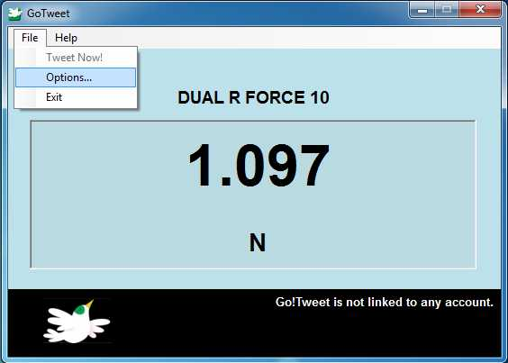
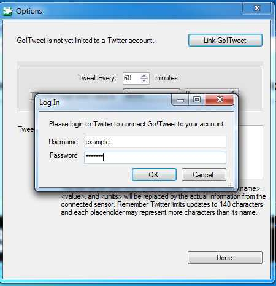

Connecting to Twitter
Go!Tweet
utilizes Twitter's new OAuth mechanism for logging into Twitter. OAuth
helps keep your credentials safe by permitting Go!Tweet to update your
Twitter status without actually giving away your username and password.
OAuth also allows Go!Tweet to continue working even when you change
your password bypassing the need to revaildate your log-in information.
To learn more on how OAuth and Twitter work together, see this page on the Twitter Help Center
To connect Go!Tweet to your account, follow the following steps:
- In the main window, go to File > Options....

- In the Options dialog, click Link
Go!Tweet. A dialog will prompt you to enter your username and
password. If you don't have an account, go to http://www.twitter.com/signup
NOTE: Go!Tweet does NOT store your password

- Click OK to confirm your information or Cancel to exit.
To unlink your account, go to www.twitter.com/settings/connections